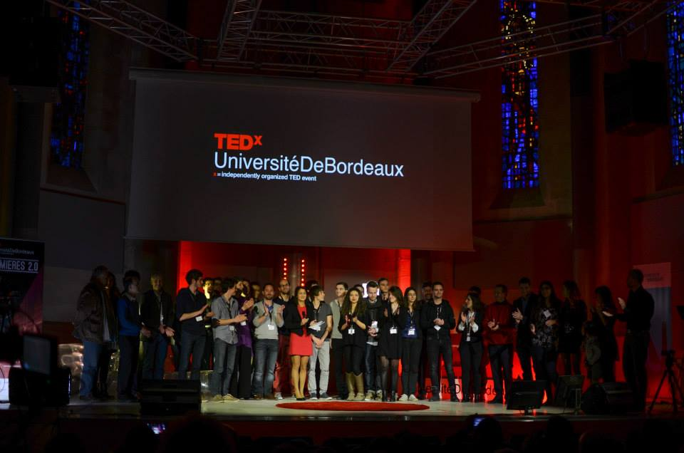
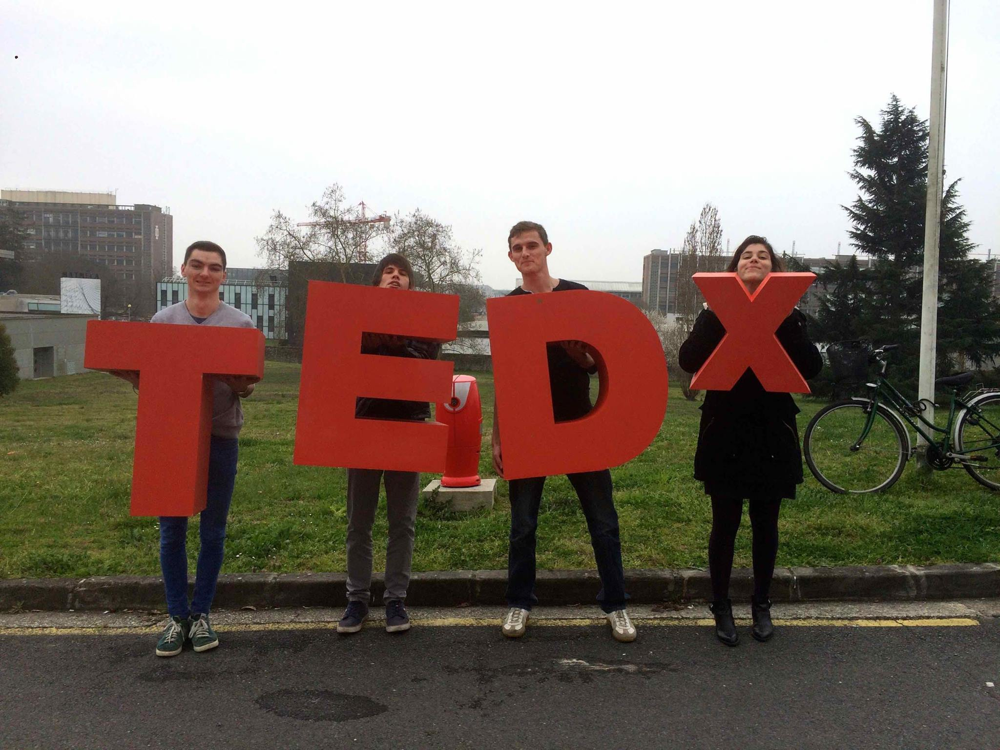
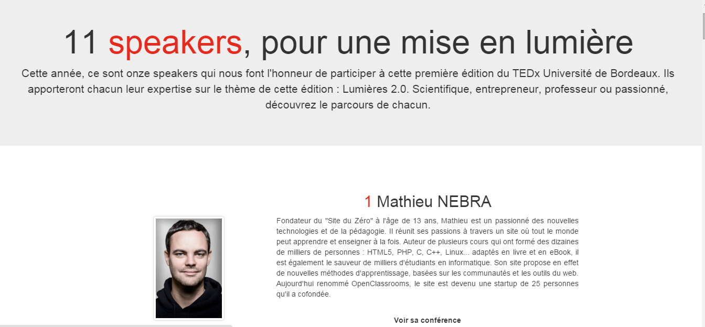

-
Description:
During the 2014 to 2015 school year, an organization was created by 4 people (full employed people) in order to create a TEDx in the university. I was a staff member participating in the project, and I was in charge with 4 other students to create the website. After six month planning, we launched TEDx project. On the day of the event, we organized the reception of the participants and managed the breaks during the event.
-
Release date:
March, 2015